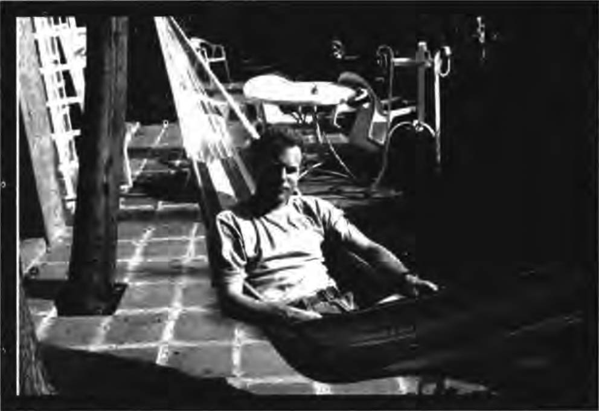

The word "myth" has been tainted by common usage in which it has come to refer to a falsehood. This is unfortunate for each of us as individuals and for society in general. Rather than being judged as "true" or "false," mythology can be best thought of as a way of making sense of reality - an interpretive tool. As such, a myth can be judged only insofar as it is functional or dysfunctional for positive growth and development at a particular point in time for a given individual, family, or group.
Just as each culture organizes reality according to its mythology, each individual also views his or her life through a unique mythological lens. As we move through life, we are called upon to update our basic mythological understanding of the world. Accepting that our conceptions of reality are mythical in nature makes it easier for us to revise and reformulate old ways of thinking rather than to feel pressured to defend outdated views. Our personal mythologies, therefore, are our ever-changing systems of complementary and conflicting personal myths. A personal myth is a cognitive-affective structure or schema - a pattern of thinking and feeling that gives meaning to the past, defines the present, and provides direction for the future. It serves the functions of explaining, guiding, and sacralizing experience for the individual in a manner that is analogous to the way cultural myths serve those same functions for a society.
We can think of our personal mythology as including all the interacting and sometimes conflicting thoughts and feelings we consciously and unconsciously have about our world. These thoughts and feelings shape our comprehension of what the world is and of our place in it, and they help determine the actions we will take as we live our lives. Although our myths do not always engage our conscious mind, they are always intimately affecting our lives. We are most likely to become aware of a given myth when a change is occurring within it. Because dreams appear to synthesize one's existing mythic structures with the data of one's life experiences, any incongruity between these elements is often presented to us in dream content. It appears to be the task of many dreams to resolve any disjuncture between our personal mythology and our actual experience.
Indeed, personal myths appear to form in a manner that is parallel to the way dreams develop. We can hypothesize that personal myths and dreams are both related to the brain's propensity for language and narrative structure. Humans have often been described as "meaning-seeking animals." Our personal myths may be a way for us to find meaningful structure in our experience, while dreams perform the same function with the torrent of images and feelings welling up from the unconscious every night. As Montague Ullman has written, "Our dreams serve as corrective lenses which, if we learn to use them properly, enable us to see ourselves and the world about us with less distortion and with greater accuracy." The same can be said of our personal mythology.
Since our personal mythology has its roots in the ways we learned to make sense of our world during childhood, there is frequently a conflict in one's personal mythology which is affecting one's feelings, thoughts or behavior. A mythic crisis is apparent in regard to personal development. This crisis occurs when a prevailing myth becomes so outdated or otherwise dysfunctional that the psyche generates a counter-myth to organize perceptions and responses which the old myth cannot accommodate. When this occurs, the psyche is in conflict as each competing myth becomes a psychological entity attempting to dominate particular situations with its particular modes of perceiving and responding.
While personal myths shape our awareness, they themselves operate largely outside of ordinary consciousness. It is possible, however, to willfully bring many aspects of our personal mythology into our awareness. Because it is the nature of dreams to expose and puncture dysfunctional personal myths and to shed light on the self-deceptive strategies we use to avoid initiating a more functional pattern of behavior dream appreciation can be one of the most effective means of bringing these myths into conscious awareness. Awakening to the mythic dimension of our lives is to achieve the freedom to inspect and revise that wh ich for most people controls them unaware.

We can develop a categorization system which describes several aspects of dreams in this ongoing dialectic. A particular dream may include one or more of the aspects outlined below. For people who have learned to understand inner events in terms of personal mythology, this can be a useful framework for understanding their dreams.
• The dream may attempt to strengthen an old, self-limiting myth (particularly when it is challenged), by:
- emphasizing past experiences which provided evidence for the validity of the old myth;
- resolving conflicts between the old myth and daily experiences through the assimilation of these experiences into the structure of the old myth
- providing visions of a future dominated by the old myth - a preview of the future according to the old myth, often with a sense of inevitability.
• Dreams may create or strengthen a counter-myth which has grown out of the old myth's deficiencies by:
- reworking old experiences and interpreting them in a less self-limiting, more affirming manner providing an alternative to the old myth's template of reality;
- interpreting new experiences in this manner and/or accommodating the old myth to fit new experiences in a manner that corresponds more closely to the counter-myth;
- by organizing possibilities into a positive future with wish-fulfillment qualities; while inspiration for pursuing these possibilities is often present, instruction for how to translate them into daily life is not generally evident.
• The dream may facilitate a cognitive integration between the two myths. As ongoing experiences bring the two toward a compromise, they become more compatible, an integration of essential elements of each becomes possible, and the cognitive forces that work against conflict begin to integrate the two myths. This process is suggested in dreams which:
- highlight experiences from the past in which the mythic conflict was evident and show ways it could be integrated;
- highlight the conflict as it emerged in recent experiences and show ways of resolving it;
- portent a future where the conflict is resolved, often instructing us in how to accomplish the resolution.
Feeling tone often gives a clue as to the function of the dream. "Old myth" dreams typically feel defeating, hopeless, and draining in terms of energy and vitality. "Counter-myth" dreams typically tend to feel hopeful, optimistic, even exhilarating. "Integration" dreams tend to produce a calm positive, realistic feeling.
In summary, dreams can play an important role in presenting the personal mythic structure to the dreamer. Dreams can itemize each aspect of our personal mythology and can point out when an old personal myth has become inadequate for life's current issues. The dream can point out when personal myths have become outdated, can provide a dialectical encounter between old and new myths, and can mediate conflicts between myths even providing new mythic structures and facilitating synthesis.
For further exploration of the concepts and techniques presented in this article, please see The Mythic Path by D. Feinstein and S. Krippner, New York: Putnam/Tarcher, 1997. The second part of this essay applies these techniques of dream appreciation to some well-known popular songs in which dreams are presented.